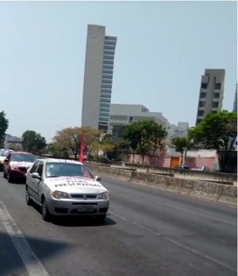
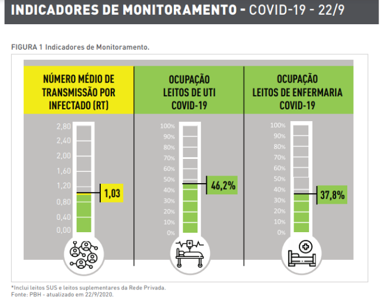
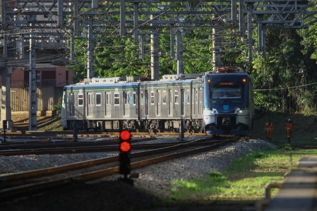
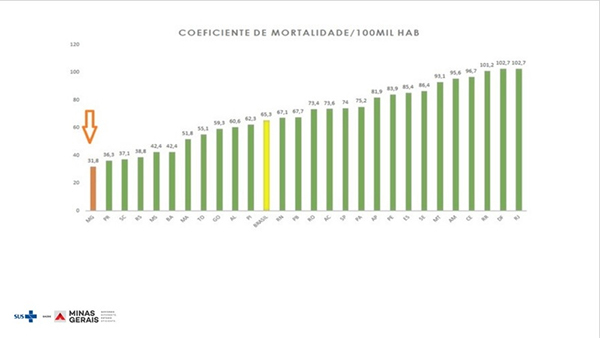

Professores municipais protestam contra possível retorno às aulas em BH

O Sindicato dos Trabalhadores de Educação da Rede Pública Municipal de Belo Horizonte
(Sind-Rede/BH) fizeram uma carreata em protesto contra a volta às aulas em Belo Horizonte,
neste domingo (20). A entidade é contrária à pressão para o retorno às aulas, pois acredita
que isso pode elevar os números de contaminações não só de estudante, mas também de familiares
pelo coronavírus.
A pressão pela volta das atividades escolares aumentou desde que o Colégio Tiradentes da Polícia
Militar em Belo Horizonte, decidiu retomar as aulas a partir desta segunda-feira (21). No entanto,
a Justiça Federal acolheu requerimento do Sindicato dos Trabalhadores Ativos, Aposentados e
Pensionistas no Serviço Público Federal em Minas Gerais (Sindsep-MG) e suspendeu o retorno.
E mesmo sem um plano de retorno por parte da prefeitura e do governo estadual, a entidade resolveu
ir às ruas neste domingo. A concentração teve início na Praça da Estação, por volta das 9h, e o
cortejo motorizado circulou a avenida do Contorno. O objetivo foi alertar a população de que ainda
não é momento para um retorno às aulas, uma vez que a pandemia ainda não está controlada.
Taxa de ocupação de leitos para Covid cresce em BH, mas se mantém sob controle

Após um aumento na taxa de transmissão do novo coronavírus ao longo de uma semana, Belo Horizonte registrou também uma
pequena elevação na ocupação de leitos reservados a pacientes com Covid-19, de acordo com o boletim epidemiológico
divulgado pela prefeitura nesta terça-feira (22). Mesmo assim, os indicadores referentes aos leitos continuam no
nível verde de acompanhamento, ou seja, em estado de controle.
A taxa da capacidade potencial de ocupação de leitos de UTI está em 46,2%, enquanto era 45,9% na segunda-feira
(21). Já a ocupação dos leitos de enfermaria subiu de 36,8% para 37,8%.
Já a taxa média de transmissão por infectado (Rt) está em nível amarelo, de alerta, em 1,03 – ou seja, em média,
neste momento, 100 infectados transmitem o vírus para 103 pessoas. Essa é a mesma taxa indicada no boletim desta
segunda-feira.
Os três indicadores são fundamentais para que a prefeitura tome decisões referentes à flexibilização das atividades
econômicas. No próximo fim de semana, a cidade terá a reabertura de clubes e a volta da Feira Hippie, com novo layout.
Ampliação do Metrô é tema na corrida pela Prefeitura de Belo Horizonte

O dinheiro para as obras é federal. A perspectiva é de que a operação do sistema seja estadualizada, para concessão à
iniciativa privada ou PPP. Mas a ampliação da rede do Metrô de BH, assim como as demais questões da mobilidade na
capital será assunto na campanha à Prefeitura. A perspectiva de liberação de R$ 1,2 bilhão para a criação da Linha 2
(Calafate/Barreiro) traz consigo a chance de uma obra esperada há mais de três décadas, com efeitos óbvios para o
dia-a-dia da capital mineira que, mantidos os prazos previstos, pode ter o novo vetor de transporte ainda na gestão
municipal que irá do ano que vem a 2024.
Colega de partido do senador Carlos Viana (PSD), que divulgou primeiro a informação da provável destinação dos recursos,
oriundos de indenização paga pela Vale à União, o prefeito Alexandre Kalil sugeriu, por meio de post no Twitter
("Vamos aguardar"), postura cautelosa em relação ao tema. Quanto às propostas para um eventual segundo mandato, o
estafe da candidatura só pretende revelá-las a partir do início da campanha, no próximo domingo.
MInas tem menor taxa de mortes por covid pr 100 mil habitantes

Em coletiva nesta terça feira(22) o secretário estadual da saúde de Minas Gerais, Carlos Edudardo do Amaral, apresentou um gráfico
com o comparativo da taxa de mortalidade por 100 mil habitantes em todos os estados do Brasil. De acordo com a análise
Minas está, hoje, com 31.8 óbitos pra cada 100 mil habitantes, mantendo a menor taxa de mortalidade do país
“Obtivemos o primeiro lugar em 31 de julho. Desde então, o estado se mantém com a menor mortalidade proporcional do
Brasil. Para nós, essa posição é resultado das ações desenvolvidas pelo Estado e pelas secretarias municipais de
Saúde. Começamos o enfrentamento à covid-19 com 2.072 leitos de UTI, hoje, já passamos de 3.900”, pontuou o secretário.